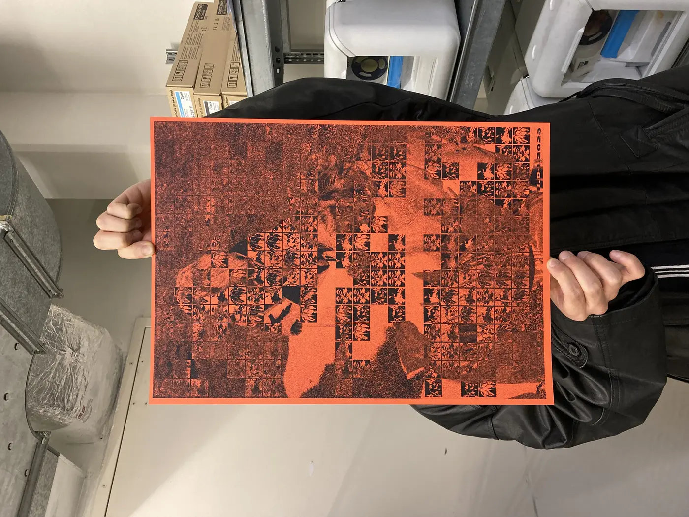
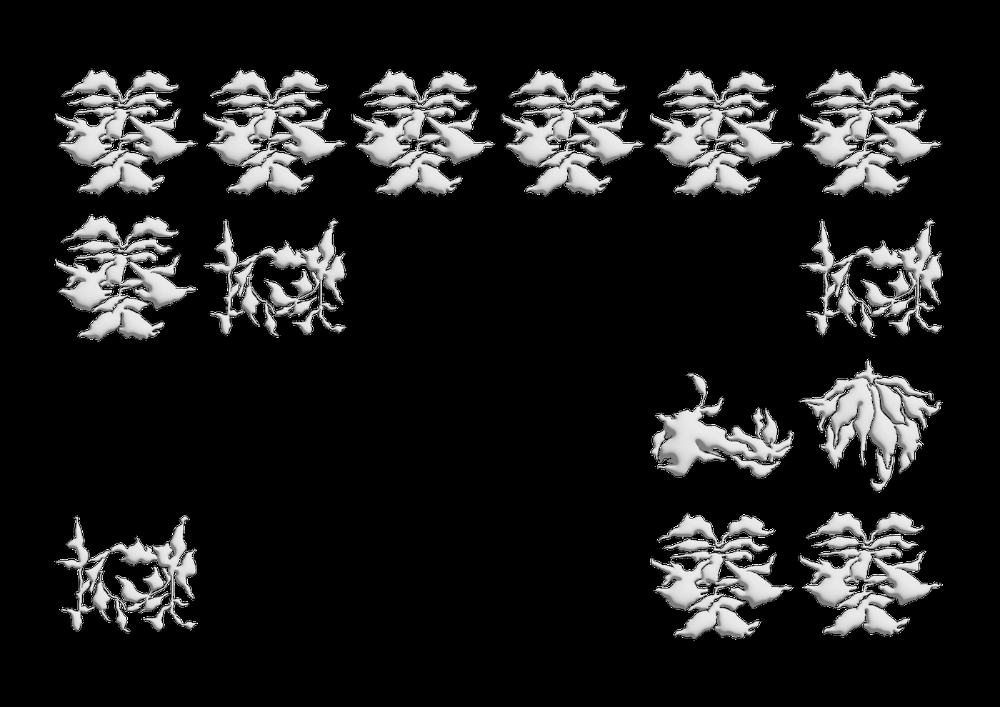
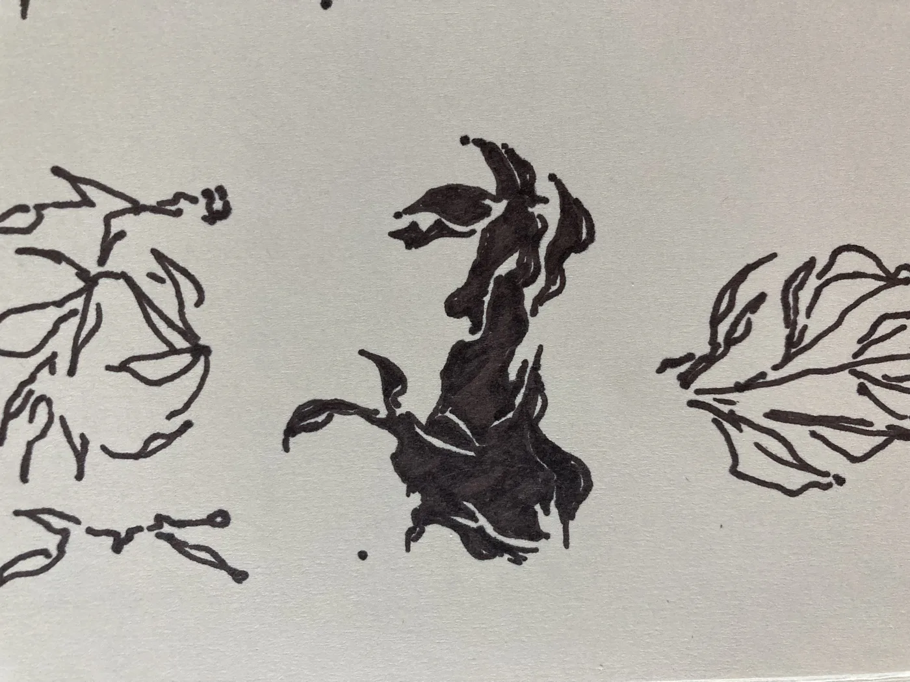
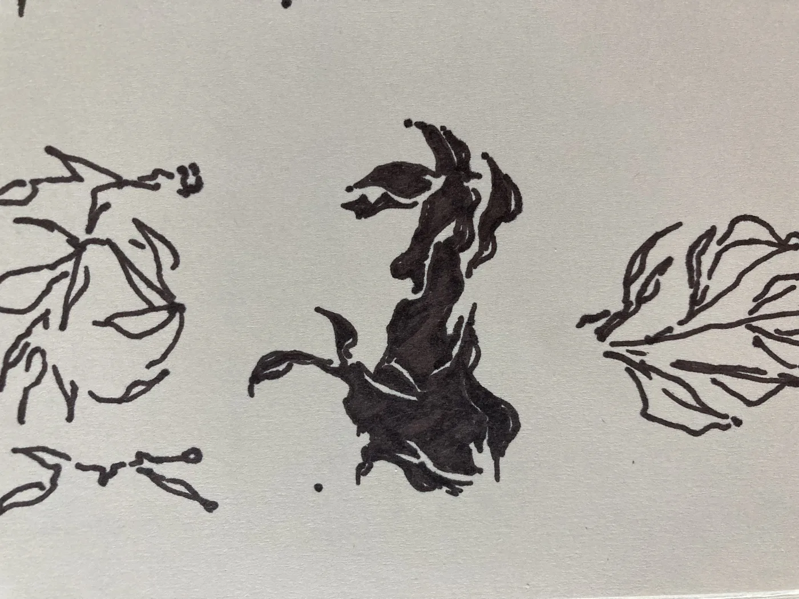
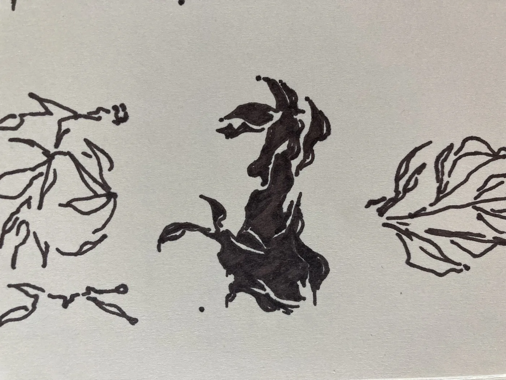

olvehyh
« Human Routine »
A video project depicting a visual language about the human routine, highlighting a profound beauty to the common monotony that illustrates our lives.
Below are posters for the video Human Routine, that once more display the varying sequences of four core human activities. (1) Human Routine final poster, A3 Laserprint. (2) Human Routine experimental poster, A3 Risograph. (3) Human Routine experimental poster no.2, A1 Silkscreen.
Below are posters for the video Human Routine, that once more display the varying sequences of four core human activities. (1) Human Routine final poster, A3 Laserprint. (2) Human Routine experimental poster, A3 Risograph. (3) Human Routine experimental poster no.2, A1 Silkscreen.
Video | Poster
Illustration · 3D Modelling · Video Editing · Print · Silkscreening · Risograph · Graphic Design
Duration: 1:56min
Den Haag, 2023
Printer: KABK Print Workshop
Illustration · 3D Modelling · Video Editing · Print · Silkscreening · Risograph · Graphic Design
Duration: 1:56min
Den Haag, 2023
Printer: KABK Print Workshop


 

